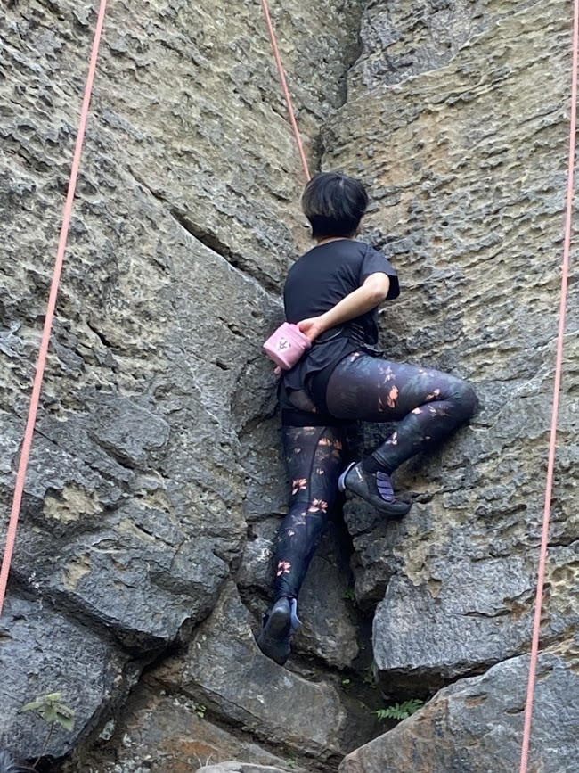

As most of the kids grew up in Asia, exercising and hobbies had never come into her mind, let alone the idea of work-life balance. When Ting-Yun was in grad school, heavy schoolwork and the anxiety of living in a foreign country made her physical and mental health worse. At this moment, she realized that she needed to start developing some hobbies and workout regularly.
One day, she was traveling in the Rocky mountain in Colorado. She saw people climbing on the rocks. "That's it! I am going to do it someday", she said to herself. So, she started to climb at the end of 2019. Feb 2021, she had her first outdoor climbing experience ☺ In addition to rock climbing, she also enjoys hiking.